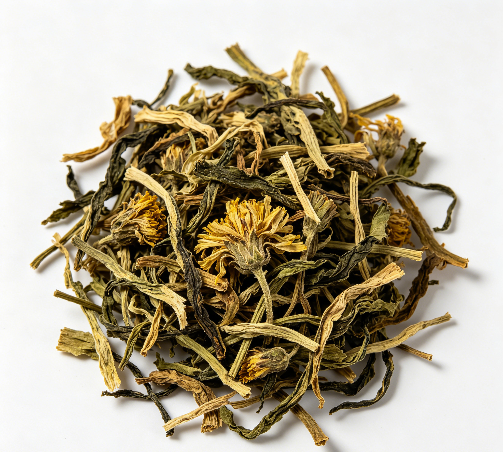

📋 基本信息
中文名蒲公英
拉丁名Taraxacum mongolicum Hand.
英文名Dandelion
产地科：菊科（Asteraceae/Compositae）；属：蒲公英属（Taraxacum）；拉丁学名：Taraxacum mongolicum Hand.-Mazz.、Taraxacum borealisinense Kitam.或同属数种。全国各地均有分布，主产于河北、山西、陕西、甘肃、内蒙古及东北三省等地，多生于山坡草地、路旁、田间。
性状本品呈皱缩卷曲的团块。根呈圆锥状，多弯曲，长3～7cm；表面棕褐色，抽皱；根头部有棕褐色或黄白色的茸毛，有的已脱落。叶基生，多皱缩破碎，完整叶片呈倒披针形，绿褐色或暗灰绿色，先端尖或钝，边缘浅裂或羽状分裂，基部渐狭，下延呈柄状，下表面主脉明显。花茎1至数条，每条顶生头状花序，总苞片多层，内面一层较长，花冠黄褐色或淡黄白色。有的可见多数具白色冠毛的长椭圆形瘦果。气微，味微苦。【《中国药典》2020年版一部】
用法用量10～15g。【《中国药典》2020年版一部】
贮藏置通风干燥处，防潮，防蛀。【《中国药典》2020年版一部】
☯ 传统属性
四气寒
五味苦、甘
归经肝、胃经
功能主治清热解毒，消肿散结，利尿通淋。用于疔疮肿毒，乳痈，瘰疬，目赤，咽痛，肺痈，肠痈，湿热黄疸，热淋涩痛。【《中国药典》2020年版一部】
禁忌症阳虚外寒、脾胃虚弱者忌用；用量过大可致缓泻。【《中药学》教材/《中药大辞典》】
毒性常规用量安全性较好。偶见胃肠道反应：恶心、呕吐、腹部不适及轻度腹泻，多与用量过大或脾胃虚寒者服用有关；个别出现过敏反应，如荨麻疹、皮肤瘙痒，严重者可致过敏性休克（多见于注射制剂，口服少见）。阳虚寒盛者服用可加重畏寒、泄泻。长期大量饮用蒲公英茶可能损伤脾胃阳气。
适宜体质湿热质、阴虚质、血瘀质、气郁质
适宜证型热证、湿热证、实热证、火毒证
🔬 现代研究
主要成分主要含酚酸类化合物：菊苣酸（药典指标成分）、咖啡酸、绿原酸、单咖啡酰酒石酸等咖啡酰奎宁酸衍生物（已报道30余种）；黄酮类：木犀草素、槲皮素及其苷；三萜及甾醇类：蒲公英甾醇、蒲公英赛醇（taraxerol）、β-谷甾醇；倍半萜内酯类：蒲公英苦素（taraxacin）等；另含蒲公英多糖、菊糖（根中含量较高）、胆碱、有机酸、维生素及多种微量元素。根、叶、花中成分分布有差异。
药理作用现代研究表明：①抗菌：对金黄色葡萄球菌、溶血性链球菌、大肠杆菌等多种细菌有抑制作用；②抗炎：抑制炎症因子释放，减轻组织炎症反应；③抗氧化、清除自由基；④保肝利胆：促进胆汁分泌，减轻肝损伤；⑤利尿通淋；⑥抗肿瘤：蒲公英甾醇、多糖及萜类成分在多种肿瘤细胞模型中显示抑制增殖、诱导凋亡作用；⑦免疫调节：蒲公英多糖可增强机体免疫功能；⑧保护胃黏膜、抗溃疡；⑨降血糖、降血脂等作用亦有报道。
食疗功效传统食疗认为蒲公英能清热解毒、消肿散结、利湿通淋，尤善治乳痈，被誉为“乳痈要药”。民间常用鲜蒲公英捣敷或煎服治乳腺炎初起、疔疮肿毒；蒲公英茶用于咽喉肿痛、目赤、胃热口臭；蒲公英绿豆汤清热解暑；凉拌蒲公英幼苗为北方春季常见野菜，有清火开胃之效。
食养禁忌
🏭 产品形态与潜在功能
推荐形态
代茶饮提取物袋泡茶
潜在功能